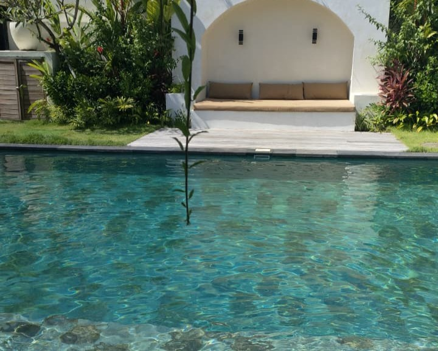
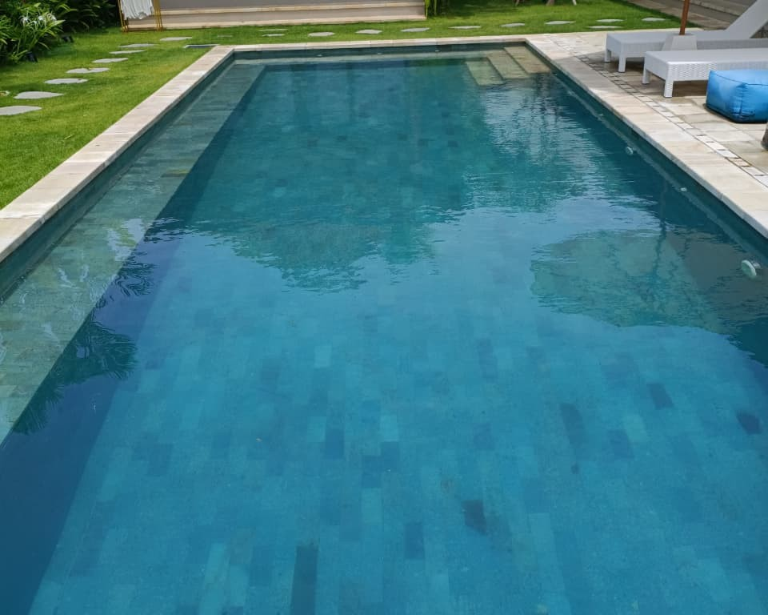
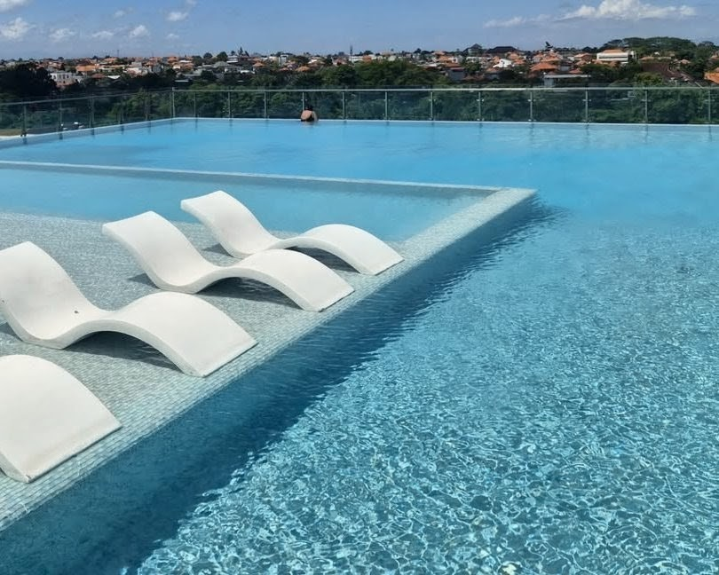
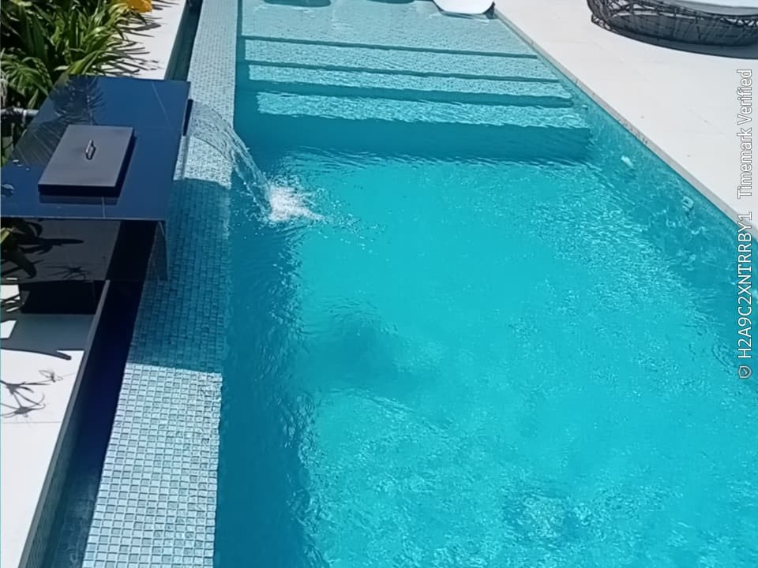

Our team offers efficient and safe pool maintenance services for your swimming pool, so that your swimming pool remains clear and safe for swimming.
Swimming pool maintenance includes cleaning the swimming pool and providing chemicals to maintain the chemical stability of the swimming pool water so that the swimming pool is clear and safe for users to use.
Swimming pool technicians include repairs or installation of components that support the smooth and safe operation of swimming pools.




Threepoolman is a team of professionals specializing in the maintenance and repair of swimming pool operational systems. Our services focus not only on aesthetics but also on ensuring the water's chemical and microbiological quality is maintained for safe and comfortable use. Furthermore, our experienced technicians are ready to address various technical issues with your pool's pump room operational system.